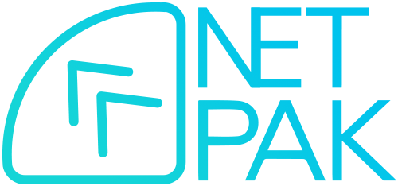
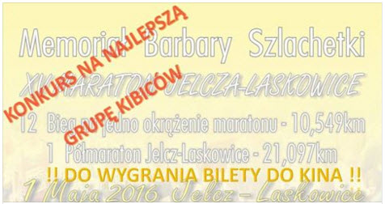
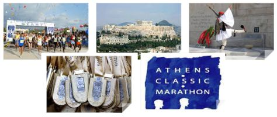
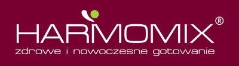
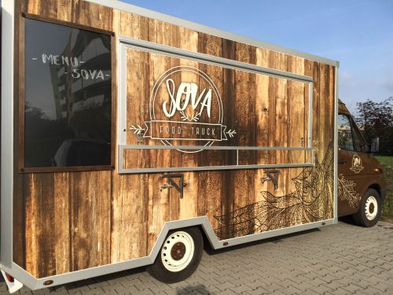
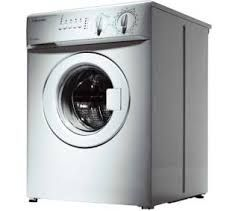
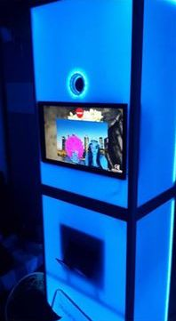
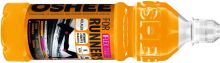
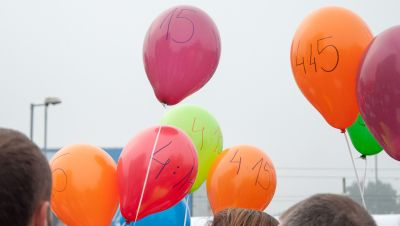
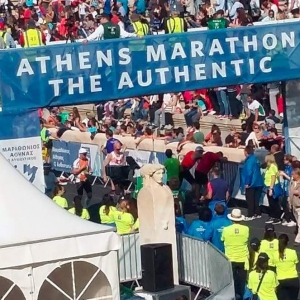

Aktualno¶ci:
... i po maratonie. Oraz wszystkich biegach towarzysz±cych.
Dziêkujemy bardzo za wspania³e 1-majowe ¶wiêto biegowe wszystkim jego uczestnikom: biegaczom
du¿ym i ma³ym, chodziarzom oraz kibicom.
Tego roku ponownie pobili¶my rekord frekwencji w naszych zawodach. Stajemy siê du¿±, powa¿n± imprez± na biegowej
mapie Dolnego ¦l±ska.
Ju¿ dzi¶ zapraszamy do Jelcza-Laskowic na nastêpn± edycjê - 16-ty Maraton Jelcz-Laskowice i 12-ty Memoria³ Barbary
Szlachetki (1 maja 2017 r.).
A oto ¶wie¿e wspomnienia - zapis transmisji na ¿ywo z biegów oraz kilka galerii zdjêæ:
= = = = = = = = = = = = = = = = = = = = = = = = = = = = = = =
= = = = = = = = = = = = = = = = = = = = = = = = = = = = = = =

|
Jak ju¿ informowali¶my wcze¶niej, podczas biegów na trasie bêd± rozstawione 3 kamery, w tym 2 sta³e oraz jedna lotna.
Pod tym linkiem: http://netpak.pl/maraton bêdzie mo¿na
¶ledziæ poczynania zawodników na trasie.
Transmisjê i obs³ugê zapewnia firma Netpak z Jelcza-Laskowic, która równie¿ jest fundatorem nagród dla najlepszego
Maratoñczyka w¶ród Pañ i Panów z terenu Jelcza-Laskowic, a nagrod± jest roczny bezp³atny dostêp do internetu.
Transmisja bêdzie równie¿ dostêpna na telefonach komórkowych. Bêdzie j± mo¿na cofaæ w dowolnym momencie, oraz powróciæ
do relacji na ¿ywo. Komentowaæ relacjê bêdzie dla nas po raz ju¿ 15-ty pan Zdzis³aw Hildebrandt, maratoñczyk, który
swego czasu bêd±c ju¿ po 40-tce z³ama³ barierê czasu 2:30 w maratonie.
|
Zapraszamy do udzia³u w konkursie na najlepszy doping na trasie
XV Maratonu Jelcz-Laskowice. Zapraszamy grupy kibiców z ca³ej Gminy do jak najg³o¶niejszego dopingu
uczestników Maratonu.
Najlepsza (najg³o¶niejsza i najbardziej pomys³owa grupa) otrzyma 12 zaproszeñ
do Kina Cinema-City Korona we Wroc³awiu!!
Zg³oszenia grup (Nazwa oraz miejsce ''posterunku'') prosimy zg³osiæ drog± elektorniczn± na kbharcownik@wp.pl.
Dodatkowo ka¿dy otrzyma pami±tkowy medal i upominek!!
ZAPRASZAMY DO ZABAWY!!
|

|

|
|
Osoby, które ukoñcz± bieg na dystansie 42,195 m. wezm± udzia³ w konkursie, w którym nagrod± g³ówn± bêdzie
wycieczka do Aten i udzia³ w 34 ATHENS CLASSIC MARATHON. Wyjazd bêdzie
zorganizowany przez biuro Maraton Travel z Ostrowa Wielkopolskiego.
|
Firma Harmomix zaprasza w okolicê startu / mety na prezentacjê
oferowanego przez siebie sprzêtu, w tym m.in. wyciskarki wolnoobrotowej. Zapraszamy na degustacjê! Haromomix
przekaza³ na losowanie 3 MASA¯ERY!
Co wiemy o firmie Harmomix? ''Od 2007 roku zajmujemy siê produkcj±, promocj± i dystrybucj±
najwy¿szej jako¶ci urz±dzeñ przeznaczonych dla osób dbaj±cych o zdrowie swoje i swoich bliskich.
Naszymi flagowymi produktami s±: Multi Robot Gotuj±cy oraz Wyciskarka Wolnoobrotowa do owoców, warzyw i zió³,
posiada specyficzne i wyj±tkowe w³a¶ciwo¶ci.
|
|

|
Nasze urz±dzenia produkujemy tylko z materia³ów
najwy¿szej jako¶ci, bezpiecznych dla zdrowia (BPA Free) i bardzo trwa³ych. Na nasze urz±dzenia udzielamy
Gwarancji Premium na okres a¿ 10 lat! Zapraszamy do w³asnorêcznego wypróbowania naszego sprzêtu!''
Infolinia tel. 515 241 268. www.harmomix.pl
Foodtruck! SOVA food truck to ¶wie¿ak w ¶wiecie coraz bardziej
znanych i lubianych samochodów gastronomicznych. Jak pisz± truckowcy: Nasz debiut odby³ siê podczas otwarcia Europejskiej Stolicy
Kultury we Wroc³awiu. Kolejne wydarzenia, w których braliœmy udzia³ to imprezy sportowe, jak ''Wroc³awska
30stka'', liczne Targi organizowane zarówno we Wroc³awiu, jak i Opolu, a tak¿e zloty food trucków pod Hal±
Stulecia czy pod Browarem Mieszczañskim.
Nasze menu sk³ada siê przede wszystkim z kanapek grillowanych, jako
zak±skê proponujemy tarty galette w wersji mini - wytrawne i na s³odko. W swojej ofercie mamy tak¿e napoje
butelkowe, ale tak¿e przygotowywane przez nas soki wyci¶niête ze ¶wie¿ych owoców. Do s³odkich pozycji z
naszego menu oferujemy hiszpañsk± kawê (po³±czenie Arabiki 30% i Robusty 70%) sporz±dzan± w ekspresie
ci¶nieniowym.
Zapraszamy do Foodtrucka w dniu zawodów w pobli¿u startu / mety!
|
|

|
|
W dniu zawodów, w godzinach 11:00 -– 15:00 profesjonalny i nieodp³atny masa¿ dla biegaczy oferowaæ bêdzie w okolicach
mety firma AQUAMED!
|
|
| 
|
Na ka¿dym z trzech dystansów naszych pierwszomajowych biegów bêdzie mo¿na wygaæ
pralkê Electrolux!
|
W dniu imprezy od godz. 10:00 do 14:00 uczestnicy biegów i rodziny bêd± mog³y zrobiæ sobie pami±tkowe zdjêcie w
Fotobudce.
Zdjêcia bêd± darmowe, drukowane na miejscu przez firmê Fotobudka Keep Smiling
|

|

|
Oshee napojem izotonicznym naszego maratonu! Ka¿dy z Pañstwa otrzyma ten
izotonik w pakiecie startowym. Oshee bêdzie tak¿e dostêpny na trasie na punktach ¿ywieniowych.
|
Poszukiwani PACEMAKERZY! Obecnie poszukujemy Pacemakerów na
1 Pó³maraton Jelcz-Laskowice na czasy 1:30,
1:40, 1:50, 2:00 oraz na XV Maraton Jelcz-Laskowice
na czasy
3:30, 4:00, 4:30.
Zg³oszenia prosimy wysy³aæ na adres kbharcownik@wp.pl, podaj±c Imiê Nazwisko oraz czas i dystans na jakim
chcecie startowaæ. Zapraszamy równie¿ do zapisów na nasze biegi - optymalna op³ata
startowa do 31 marca!
|

|

|
Ju¿ teraz przygotowujemy dla wszystkich Pañstwa bardzo atrakcyjne nagrody na nasz jubileuszowy 15 Maraton:
W sk³ad pakietu startowego wchodziæ bêdzie koszulka techniczna i rêcznik
oraz izotonik i baton energetyczny. Bêdzie te¿ mo¿liwo¶æ skorzystania z masa¿u i p³ywalni miejskiej.
Osoby, które ukoñcz± bieg na dystansie 42,195 m. wezm± udzia³ w konkursie, w którym nagrod± g³ówn± bêdzie
wycieczka do Aten i udzia³ w 34 ATHENS CLASSIC MARATHON. Wyjazd bêdzie
zorganizowany przez biuro Maraton Travel z Ostrowa Wielkopolskiego.
Mamy tak¿e dla Pañstwa 3 pralki firmy Electrolux - bêd± je mogli wygraæ
uczestnicy dystansów 10,5 km, pó³maratonu oraz maratonu. Czekaj± na Pañstwa tak¿e 2 rowery
ufundowane przez DECATHLON!
|


|